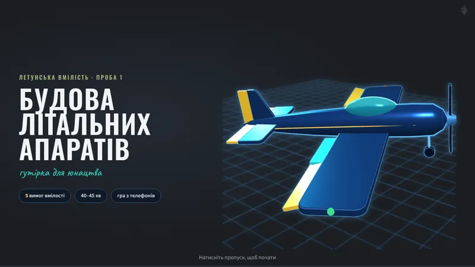
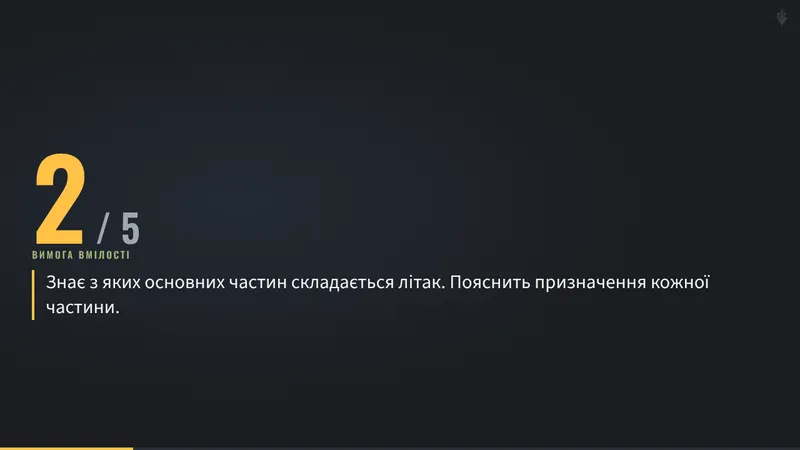
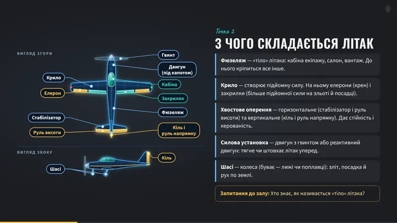
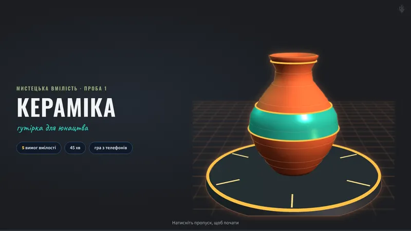

Макет для перегляду. Справжні гутірки не змінено. ← Усі макети
Стилі гутірок
одна родина — різний характер
Ті самі гутірки, але кожна у своєму стилі, який іде від її теми. Порядок слайдів, керування і гра — однакові для всіх, тож виховник і юнаки в будь-якій гутірці одразу знають, де що. Натисніть слайд, щоб побачити його на весь екран.
Однакове для всіх
порядок: титул → «П’ять кроків» → точки → запитання → практика → гра → QR
меню в куті, пульт з телефона, смужка внизу
гра «Потужний СКОБ!» з кольорами С, К, О, Б
пластова емблема в куті і шрифт основного тексту
Своє в кожної
кольори й фон — від теми гутірки
шрифт великих заголовків
стиль малюнків
своя «фішка»: як виглядає розділ «Точка 2 з 5»
Будова літальних апаратів І
стиль «Креслення»
Кожен слайд — аркуш технічного креслення: синя калька з сіткою, рамка і штамп у кутку з номером аркуша. Розділ «Точка 2 з 5» — маршрут польоту, де літачок уже пролетів першу точку. Неонові малюнки лишаються, на титулці — так само 3D-літак.
Зараз



Новий стиль
Титул. Назва — широким «технічним» шрифтом; аркуш у рамці, у кутку — штамп із номером аркуша. У гутірці тут лишається 3D-літак.Розділ «Точка 2 з 5». Маршрут польоту: першу точку пролетіли, літачок — на другій, далі пунктир.Звичайний слайд. Малюнок — як креслення, справа коротко 5 частин (подробиці — у нотатках на пульті).Великий факт. Один факт на весь слайд — для ритму між слайдами з текстом. Справжнє фото того польоту (воно вже є в гутірці), а розмірна лінія показує, які це «лише 37 метрів».
Кераміка І
стиль «Гончарня»
Тепла майстерня ввечері: фактура глини, світло печі, паперові ярлики і клеймо майстра на титулці. Розділ «Точка 1 з 5» — п’ять плиток-проб: поточна світиться, практичні — з пунктиром («зробиш сам»), виконані — вкриті зеленою глазур’ю. Гончарні малюнки лишаються, на титулці — так само 3D-ваза.
Зараз

Новий стиль
Титул. М’який «ручний» шрифт, рівень «І» — як клеймо майстра на дні виробу. У гутірці тут лишається 3D-ваза на крузі.Розділ «Точка 1 з 5». Плитки-проби: поточна світиться, точки 4 і 5 — з пунктиром (практика), а виконані згодом стануть зеленими.Звичайний слайд. Інший розклад: вироби на всю ширину, ніби на полиці, під ними — одне речення і запитання до залу.Великий факт. Одне велике число і коротке пояснення, поруч — стрічка «від фігурки до гончарного круга».